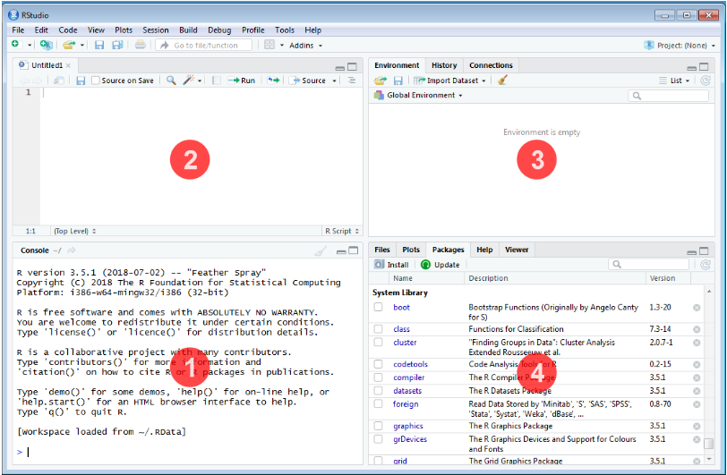
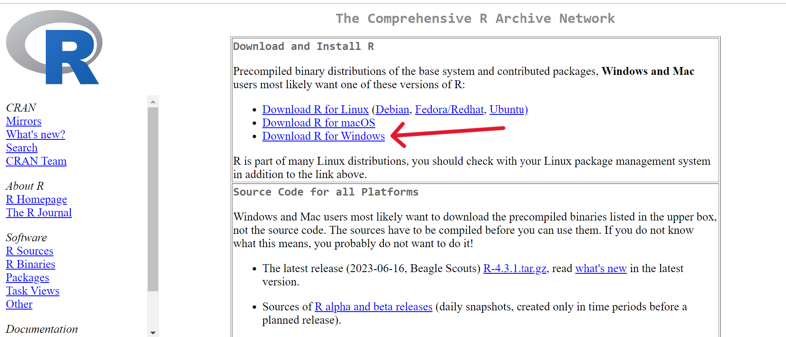
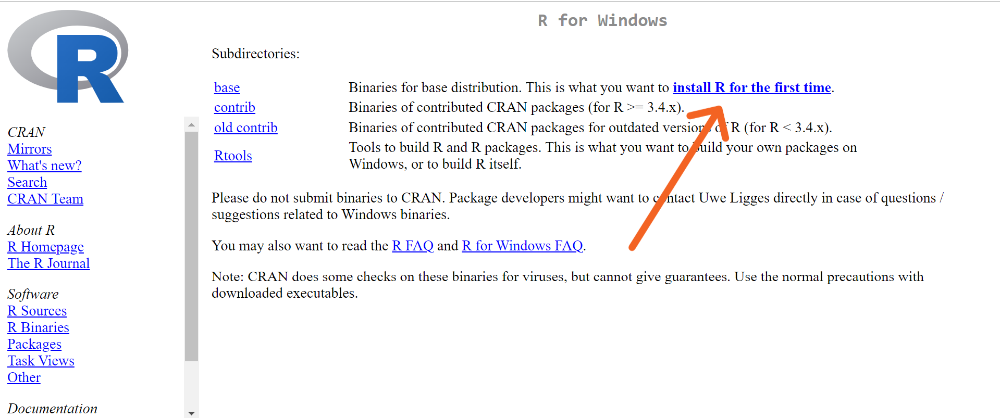
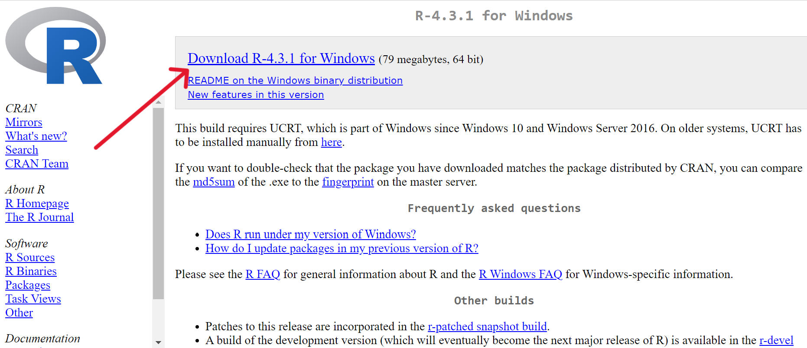
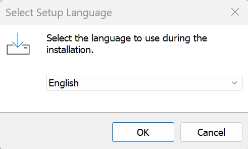
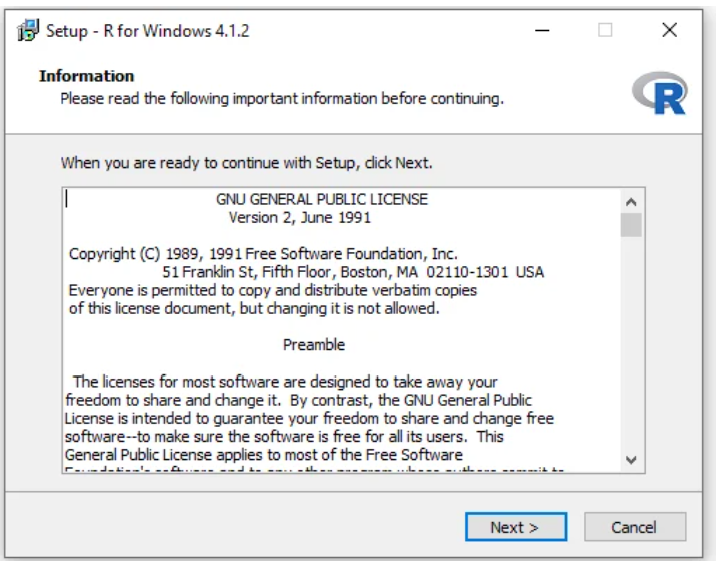
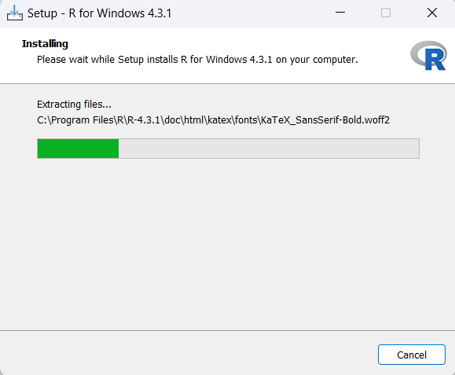
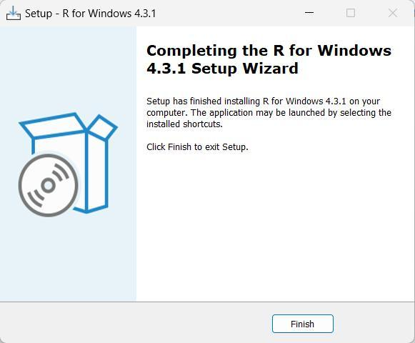
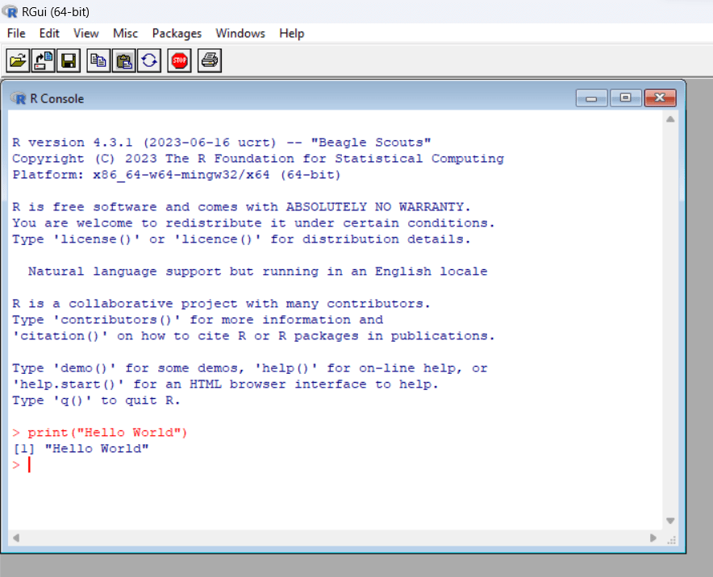
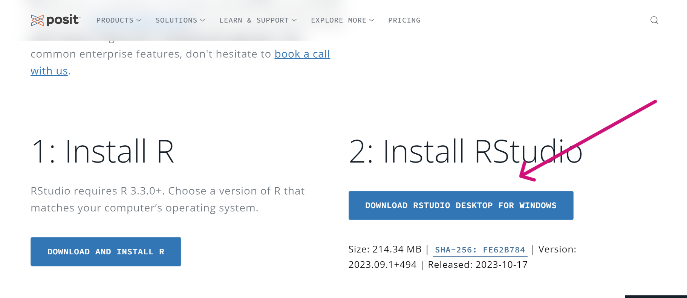

2 R and RStudio
This chapter gives a brief overview of R and RStudio, the two programs used throughout this book, and guides you through installing them.
2.1 R
R is a programming language for statistical computing and graphics supported by the R Core Team and the R Foundation for Statistical Computing. It was created by the statisticians Ross Ihaka and Robert Gentleman at the University of Auckland. R is an implementation of the S programming language. R is used by data miners, bioinformaticians and statisticians for data analysis and developing statistical software. Users have created packages to augment the functions of the R language. According to user surveys and studies of scholarly literature databases, R is one of the most commonly used programming languages used in data mining. The official R software environment is an open-source free software environment within the GNU package, available under the GNU General Public License. It is written primarily in C, Fortran, and R itself (partially self-hosting). R has a command line interface. Multiple third-party graphical user interfaces are also available, such as RStudio, an integrated development environment.

Figure 2.1: R logo
2.2 RStudio
RStudio is a free and open-source integrated development environment (IDE) for R. It includes a console, a syntax-highlighting editor that supports direct code execution, and tools for plotting, history, debugging and workspace management. RStudio runs on the desktop (Windows, Mac and Linux) or in a web browser connected to RStudio Server. It was founded by JJ Allaire, creator of the programming language ColdFusion; the company behind it was renamed Posit in 2022. RStudio is available in two editions: RStudio Desktop, where the program is run locally as a regular desktop application; and RStudio Server, which allows accessing RStudio using a web browser while it is running on a remote Linux server.
RStudio is written in the C++ programming language and uses the Qt framework for its graphical user interface. Work on RStudio started at around December 2010, and the first public beta version (v0.92) was officially announced in February 2011.

Figure 2.2: RStudio logo
Typical RStudio window has four panes as explained below

Figure 2.3: RStudio window
- Console
This is where the action happens. Any valid R code typed after the > prompt is executed when you press Enter, and the output is shown immediately below.
- Source Editor
This is where R scripts (collection of code) can be created and edited. New R script can be opened by clicking File –> New File –> R Script or using the shortcut Ctrl+Shift+N. You can type your codes here. To run a code in console or execute, place the cursor in the line which code is written and press Ctrl+Enter, or highlight the code you wish to evaluate and click the “Run” button on the top right of the Source. You can save your R codes, written in script.
- Environment|History|Connections
All of the data objects (such as vectors, matrices, and dataframes) that you have defined in your current R session are listed under the Environment tab of this panel. In data objects, you may also examine details like the quantity of observations and rows. A few other clickable options are available on the tab, such as Import Dataset, which will launch a graphical user interface (GUI) for inputting data into R.
This panel’s History tab only provides a history of all the code that you have previously evaluated in the Console.
The Environment / History panel could be helpful as you become more accustomed to R. However, you can ignore it right now. You can simply just reduce the window by clicking the minimise button in the panel’s upper right corner if you wish to clear up space on your screen.
- Files|Plots|Packages|Help|Viewer
You can find a collection of useful information in the Files|Plots|Packages|Help panel. Let’s examine each tab in more detail:
- The file directory on your hard disc is accessible through the files panel. You can utilise the “Files” panel to set your working directory by clicking “More” and then “Set As Working Directory” once you’ve navigated to the folder where you wish to read and save files.
- All of your plots are displayed in the Plots panel. There are buttons to export the plot as a pdf or jpg and to open the plot in a separate window.
We are interested in the install button in this pane, to install packages required for our analysis.
2.3 Installing R
Follow below steps in correct order for installation of R
2.3.1 First install R latest version
To install R on Windows OS:
Go to the CRAN website.
Click on “Download R for Windows”.

Click on “install R for the first time”.

Click on the “Download R-x.y.z for Windows” link to download the R executable (.exe) file. (The screenshot shows version 4.3.1; always download the latest version offered.)

After downloading the file. Run the R executable file by double clicking on the downloaded file to start installation, and allow the app to make changes to your device.
Select the installation language.

Follow the installation instructions.

Click next and wait for the installation to complete.
Click on “Finish” to exit and complete the installation setup.
You can now run R from the start menu or the shortcut created on your desktop
RStudio is an interface to R; it does not contain R itself. Install R first, then RStudio.
2.4 Installing RStudio
After installing the latest version of R, go to the RStudio Desktop download page.
Click on “DOWNLOAD RSTUDIO DESKTOP FOR R”

Run the downloaded installer and complete the setup in the same way as for R. After installation you can start RStudio from the Start menu or from the shortcut on your desktop. RStudio finds your R installation automatically.
Now you are ready to explore the world of data analysis and unleash the potential of R and RStudio to unlock valuable insights from your datasets. Happy Statistics with R!
The above descriptions are sourced from:
The R Project for Statistical Computing